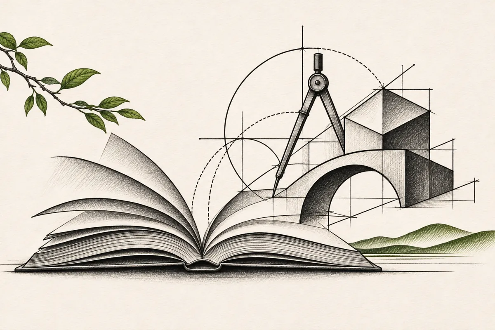

Lycée de Kigali · Rwanda
A tradition of learning.
A future of possibility.
Since 1974, a school community shaped by learning, character and the ambition to excel.

1974Year established
6,000+Alumni · approximate community size
Strive to ExcelOur school motto